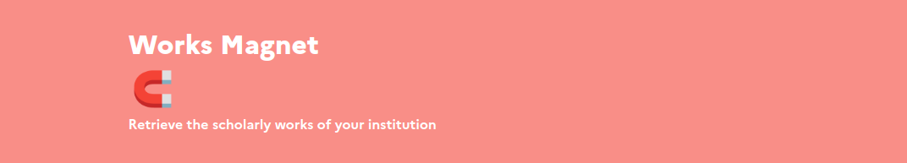
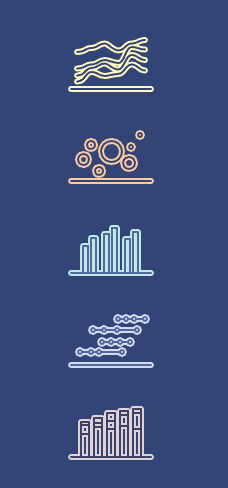

16 mai 2024
Webinaire Club Utilisateurs
Eric Jeangirard, Anne L'Hôte
DISD / SIES / MESR


Ce qui n'est plus à faire
Depuis 2018, le baromètre de la science ouverte s'enrichit de nouveaux objets d'étude:
- 📜 2018 : Publications
- 🧪 2020 : Essais cliniques et études observationnnelles
- 🎓 2021 : Thèses de doctorat
- 🧑💻 2021 : Données de la recherche et code et logiciels

Méthodologie d'analyse des données de la recherche et code et logiciels est basée sur les PDF téléchargés
Quid de l'approche par entrepôts ?
Limitations
Pour retrouver ses propres publications, l'Université de Lorraine propose cette méthodologie
🕵️
Comment retrouver ses propres jeux de données ?
Fonctionnalités - Recherche
- Objets recherchés: publications et / ou jeux de données
- Recherche par chaine(s) de caractères
- Recherche par RoR(s)
- Filtre temporel
Fonctionnalités - Actions
- Améliorer la correspondance RoR dans OpenAlex
- Retrouver ses publications
- Retrouver ses jeux de données